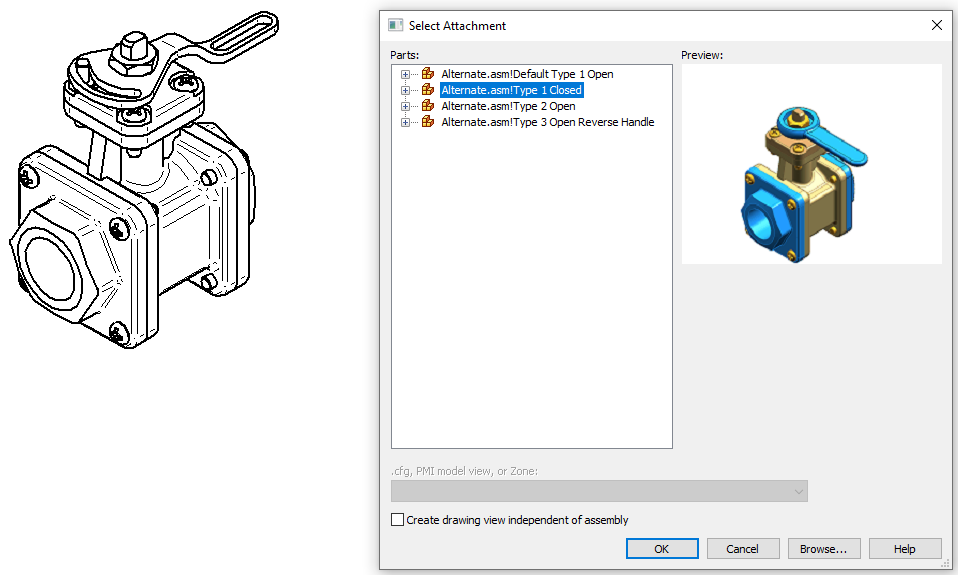
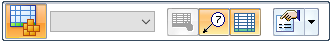

Create a family of assemblies parts list
You can use the Family of Assemblies Parts List command  to create a parts list for a drawing view of a family of assemblies (FOA) source
assembly or a family member.
to create a parts list for a drawing view of a family of assemblies (FOA) source
assembly or a family member.
A default parts list for a family of assemblies produces a structure and column layout like that shown in the following table. It contains a Quantity (Member Name) column for each member of the FOA in the selected drawing view.
Before you place the parts list, you can customize it. For example, you can select more family members to add to the parts list, add a title, and specify balloon settings, as explained below.
|
Item Number |
File Name (no extension) |
Author |
Quantity (Member 1) |
Quantity (Member 2) |
Quantity (Member 3) |
Quantity (Member 4) |
|---|---|---|---|---|---|---|
|
1 |
Body |
axlbsm |
1 |
1 |
1 |
1 |
|
2 |
Top |
axlbsm |
4 |
4 |
4 |
4 |
-
Place one or more drawing views of FOA members on a drawing sheet using either of these techniques:
-
In an open family of assemblies source document or an open assembly member document, use the File menu→New tab→Drawing of Active Model command.
-
In a new draft document, select the View Wizard command
 , and in the Drawing View Wizard—Family of Assembly Member dialog box, from the Family member list, select a FOA member, and click to place the drawing view.
, and in the Drawing View Wizard—Family of Assembly Member dialog box, from the Family member list, select a FOA member, and click to place the drawing view.
For more information, see Create a drawing with the Drawing of Active Model command or Create assembly part views with the View Wizard in the Drawings help.
Note:After you place the first drawing view of a FOA assembly member, you can use the View Wizard command to continue placing views of FOA family members on other drawing sheets. The Select Attachment dialog box is displayed each time for you to choose the alternate FOA members.

-
-
Choose the Home tab→Tables group→Family of Assemblies Parts List command
. -
On the drawing sheet, click a family of assemblies drawing view, and then do one of the following:
-
To create a default parts list for the family member represented in the drawing view, click the drawing sheet where you want to place the table.
-
If you want to customize the parts list to include more or fewer family members, to add a title, or to make other changes, on the Parts List command bar, click Properties
 , and continue with the following steps.
, and continue with the following steps.
-
-
Add family members to the parts list—In the Family of Assemblies Parts List Properties dialog box, on the Member Selection tab, do any of the following and click OK:
-
Check the Select all box to include all members of the FOA source assembly document.
-
Select one or more FOA members to add to the parts list.
-
Clear the check mark in front of FOA member names that you want to exclude from the parts list.
-
-
(Optional) Define table size and placement information for the parts list—On the Location tab, select the Create new table sheets option to generate table pages automatically. Use the options on the General tab to specify maximum table size, how the table grows or shrinks, and how multi-page tables are displayed. You also can move a table to a different sheet.
For more information, see Defining table size and location and Create new sheets for tables.
-
Continue using the Family of Assemblies Parts List Properties dialog box to customize the FOA parts list.
-
Add more columns to the parts list—On the Columns tab, review the entries in the Columns pane. These are the default columns. From the Properties pane, select and add other property columns to the list as desired, such as Document Number and Material. You also can add a column for custom properties and for variables exposed in the Variable Table. For more information, see:
-
Change default balloon appearance—On the Balloon tab, select a shape, add fixed content, choose an alignment pattern for automatically arranging the balloons, and choose clockwise or counterclockwise balloon numbering order. For examples, see Balloon tab (Parts List Properties dialog box).
Note:You cannot edit balloon appearance after the parts list is placed.
-
Add a title—On the Title tab, click the Add Title button to create, format, and position a parts list title. For more information, see Using the Title tab.
-
-
On the active drawing sheet, click to place the parts list.
-
When the value in the Quantity (Member Name) column is zero, you can define an alternate string to replace it. On the Options tab, select the check box, Show custom string if value in quantity column is zero, and type any alphanumeric characters in the box, such as N/A or Not Applicable, or use the default (–). This field does not have a defined maximum length.
-
To review the part models and FOA members associated with a FOA parts list, see Open a model from a parts list.
How do I
Create a parts listCreate a subassembly parts list
Create an exploded parts list
Create a total length parts list
Create a parts list for flexible hoses and tubing
Exclude parts from an exploded parts list
Open a model from a parts list
Example: Show custom occurrence properties in a parts list
Example: Show custom properties and materials in a parts list
Example: Show sheet metal material thickness in a parts list
Renumber a parts list
Change the active parts list
Display assembly occurrences in a drawing view or parts list
Convert a parts list to a table
Copy a parts list to the clipboard
Learn more
Parts listsFamily of Assemblies (FOA) parts lists
Assembly part views and parts lists
Subassembly drawing views and parts lists
Exploded parts lists
Custom occurrence properties in parts lists
Occurrence quantity overrides in parts lists
Item numbers in parts lists
Saving and reusing the parts list format
Look up more details
Parts List commandParts List command bar
Parts List Properties dialog box
Copy Contents command
Convert To Table command